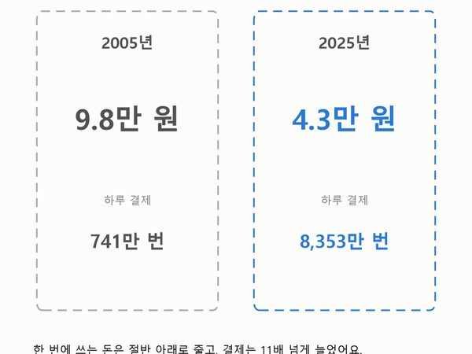
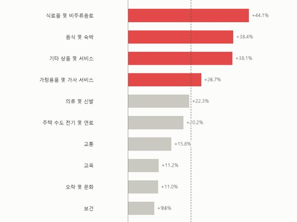
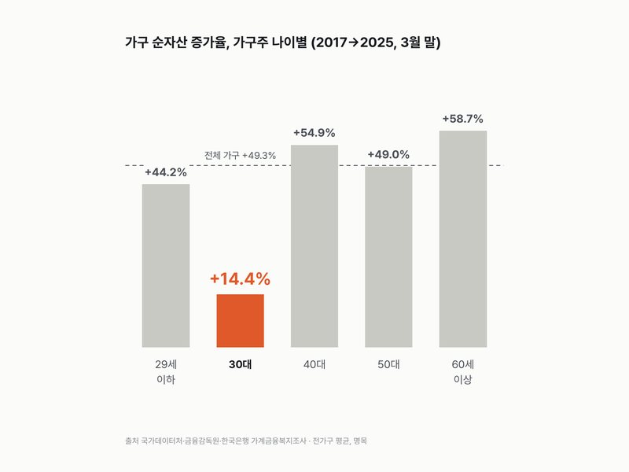
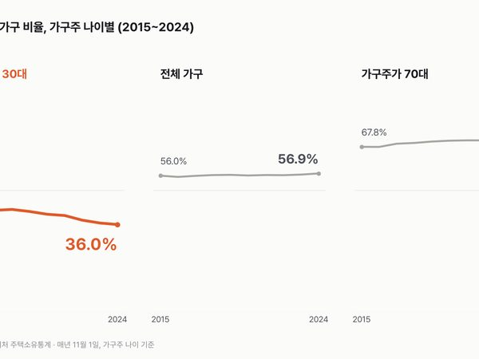

카테고리
돈·자산

4.3만 원카드 한 번 긁을 때 평균 4.3만 원, 20년 전엔 9.8만 원이었어요한국은행 지급수단별 통계 2005~2025
+44.1%10년 새 물가 23%, 먹거리는 44% 올랐다소비자물가지수 2015~2025
+14% vs +49%8년 새 순자산, 전체 +49% · 30대 가구 +14%가계금융복지조사 2017~2025
36.0%집 가진 가구 56.9%, 30대는 42.4% → 36.0%주택소유통계 2015~2024자료실에 있는 돈·자산 글 20편
- 소비자물가 2.8%, 석유류는 14.9%소비자물가조사 월별 2015~2026.10
- 가계 순자산 1경 4,200조 원, 2008년의 2.8배(2025 잠정)국민대차대조표
- 주담대 금리 4.88%, 2015년 이후 가장 높아(2026.9)예금은행 가중평균금리
- 가계 빚, 1년 소득의 174.4%(2024), 2021년엔 194.3%OECD 가계부채 2008~2024
- 한국 가계순저축률 9.4%(2024), 1988년엔 24.7%OECD 가계순저축률 1982~2024
- 해외직구 열에 여섯은 중국, 64.0%(2026년 1~3분기)온라인쇼핑동향조사 2014~2026
- 고령층 연금 월평균 87.9만 원, 남자 113.2만·여자 61.3만고령층 부가조사 2009~2026
- 60대 가구 흑자율 37.0%로 가장 높다, 39세 이하 29.9%가계동향조사 2019~2025
- 1년 새 소득 순위가 바뀐 사람 33.0%, 7년 중 가장 적다소득이동통계 2018~2024
- 휘발유 리터당 1,858원, 경유와 차이는 14원주유소 기름값 2015~2026
- 외식 제외 개인서비스 물가 4.3%↑, 전체 2.9%소비자물가 품목 성질별
- 학생 1인당 사교육비 월 22.2만 → 45.8만 원초중고사교육비조사
- 내 세대 계층 상승 가능성 높다, 22.7% → 29.1%사회조사 계층이동
- 1년 새 빚이 늘었다는 가구주, 27.3% → 17.7%사회조사 가구 소득·부채 변화
- 부모 노후는 가족이 돌봐야, 33.2% → 18.2%사회조사 부모 부양
- 반려동물 1마리, 한 달 양육비 12.1만 원반려동물양육현황조사 2025
- 소득에 만족한다, 2011년 11.8% → 2025년 28.0%사회조사 소득·소비생활 만족도
- 노후 준비, 60세 이상은 늘고 20대는 줄었다사회조사 2011~2025
- 온라인쇼핑 94조 → 275조 원, 모바일 78%온라인쇼핑동향조사 2017~2025
- 1인 가구 지출 6년 새 +22%, 오락·문화는 +42%가계동향조사 2019~2025